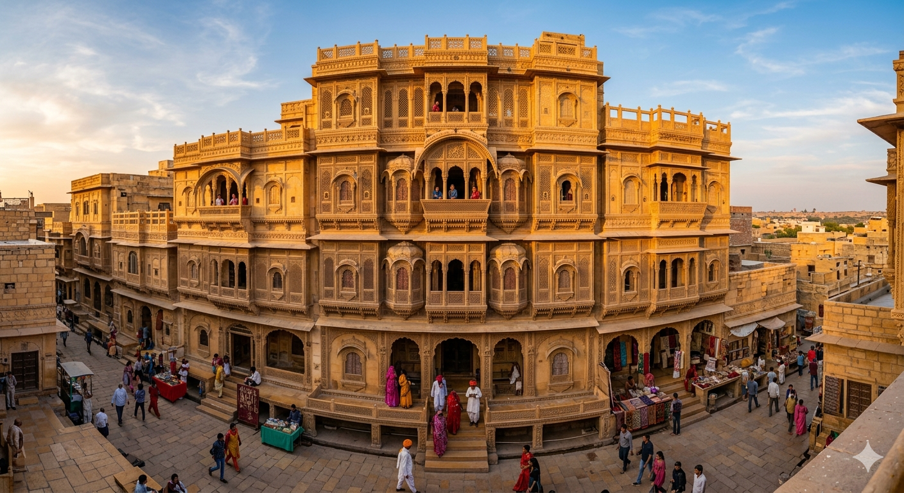

Explore Jaisalmer
Discover the golden magic of Rajasthan. From ancient forts to the endless dunes of the Thar, here are the must-visit places near our resort.

Jaisalmer Fort
The iconic "Golden Fort" is one of the world's few living forts. Explore the narrow, vibrant alleys, ancient Jain temples, and bustling handicraft markets within its massive sandstone walls.

Sam Sand Dunes
Experience the true essence of the Thar Desert. Perfect for camel safaris, jeep rides at sunset, and traditional folk music performances under the vast desert sky.

Gadisar Lake
Built in 1367, this serene artificial lake is surrounded by small temples and shrines. It is an ideal spot for boating and bird-watching, especially during the winter season.

Patwon Ki Haveli
A stunning cluster of five intricate havelis built by wealthy traders. It is the largest and most ornate mansion in Jaisalmer, famous for its grand mirror work and detailed stone carvings.

Bada Bagh
Meaning "Big Garden," this historic site features royal cenotaphs of the Maharajas. It offers a majestic and quiet atmosphere, making it a favorite for photographers during sunrise.

Kuldhara Village
An abandoned village with a mysterious history. Known as a "ghost town," it provides a hauntingly beautiful look into ancient Rajasthani architecture and local folklore.

Desert National Park
One of the largest in India, this park is a haven for nature lovers. You can spot rare wildlife like the Great Indian Bustard, desert foxes, and diverse flora unique to the Thar.

Jain Temples
Located within the Jaisalmer Fort, these 12th-century marvels are connected by a series of walkways. The intricate sandstone filigree is a testament to incredible medieval craftsmanship.

Nathmal Ji Ki Haveli
This haveli is famous for its unique blend of Rajput and Islamic architecture. The two craftsmen who built it worked simultaneously, resulting in a perfectly symmetrical yet uniquely detailed masterpiece.

Khaba Fort
A ruined fortress that offers panoramic views of the desert and surrounding abandoned villages. It is a peaceful, less-crowded destination perfect for history enthusiasts.